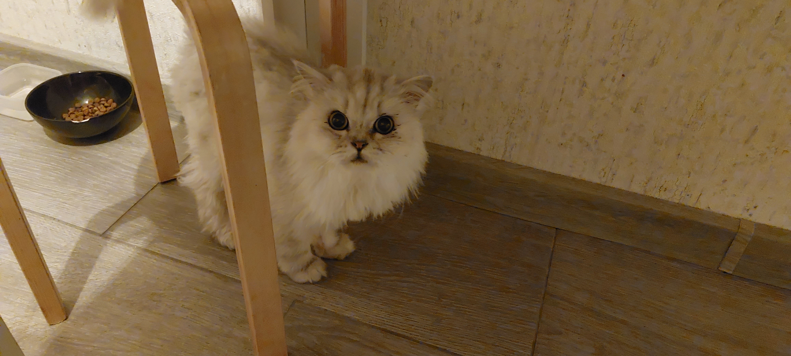

Мой кот по имени Котейка - это самый замечательный кот в мире. Я получил его в подарок на свой день рождения, когда ему было всего несколько месяцев.
Котейка - очень игривый кот, который обожает играть со мной в прятки. Он также любит лежать на моих коленях, когда я смотрю телевизор. Он очень ласковый и всегда ищет наше внимание.
Котейка любит есть рыбу и куриную грудку. Он также обожает молочные продукты, такие как йогурт и творог. Мы всегда стараемся давать ему только качественную и здоровую пищу.
Барсик любит играть со мной в прятки и ловить игрушки. Он также очень любит играть с моими ногами, когда я иду по квартире.
Мы всегда стараемся следить за здоровьем Котейки. Мы регулярно купаем его и чистим его зубы. Мы также регулярно ходим с ним к ветеринару на проверку здоровья.